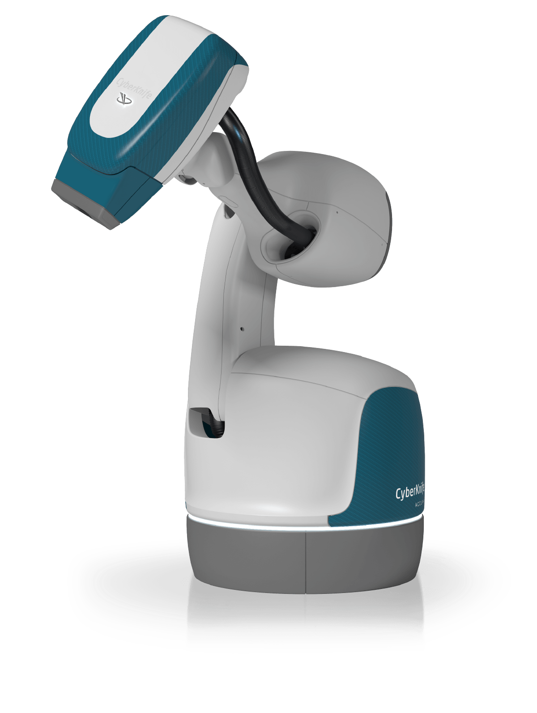

The Principle the Prohibition Lacks
The argument, illustrated. A CyberKnife and a loitering munition are both lethal and both irreversible, so the words meant to forbid one and permit the other forbid both.
Leo XIV’s Magnifica Humanitas says that it is not permissible to entrust lethal or otherwise irreversible decisions to artificial systems.1 I want to begin by granting the worry it speaks for, because I think the worry is real. There is a real good in a person being the one who decides to take a life, and an encyclical that reaches for it is not wrong to reach. The trouble is the next step, where the paragraph issues a prohibition without giving the principle that would tell anyone which decisions fall on the forbidden side of the line and which do not.
The line the words do not draw
Put two machines next to each other. A CyberKnife fixes a beam of radiation on a tumor and ablates it, and the ablation cannot be undone.2 A loitering munition circles a battlefield, identifies a target, and strikes it, and that cannot be undone either.3 Both make a decision that is lethal to living tissue, or simply lethal. Both make a decision that is irreversible. If “lethal or otherwise irreversible” were the principle, it would forbid the one we are glad to have in a hospital along with the one we are right to fear on a battlefield. The two words name a feature the cases share, which means they cannot be the feature that tells the cases apart.4

Figure 1. The CyberKnife robotic radiosurgery system, which fixes a beam of radiation on a tumor and ablates it, a lethal and irreversible act we are glad to have. Image: Accuray Incorporated (copyrighted; permission required before publication).
Figure 2. A loitering munition of the Switchblade class, which loiters over an area, identifies a target, and dives into it, also a lethal and irreversible act, and the one we are right to fear. Image: AeroVironment, Inc. (copyrighted; permission required before publication).
Press the harder cases, because that is where a stated principle has to do real work. Along the Korean Demilitarized Zone, South Korea has fielded the Samsung SGR-A1, a fixed sentry gun that detects a person, challenges him for a code, and is built to fire if he does not answer, while its makers say it is meant to tell a human from an animal.5 It is stationary and defensive, its lethal effect is irreversible, and whether it fires on its own or only on a soldier’s command is disputed by the people who built it and classified in the field. Many of us would still not put it in the same moral box as the loitering munition. There are a thousand systems like it in the middle, and neither “lethal” nor “irreversible” sorts a single one of them into the forbidden or the permitted.
Figure 3. The Samsung SGR-A1 sentry gun fielded along the Korean Demilitarized Zone, the hard middle case whose human-or-machine firing line is disputed by its own makers. Image: Robotics Today (roboticstoday.com); device by Samsung Techwin (now Hanwha Aerospace) (copyrighted; permission required before publication).
The delegation reading, and why it also fails
The strongest repair anyone has offered me is that the real prohibition is not on the instrument but on the act of delegating the discriminating judgment, the prudential call that this is a target and that is not.6 That sorts the first two cases cleanly. A surgeon makes the call and the CyberKnife carries it out; the loitering munition makes the call itself. But the turret breaks it. A human authored the rule, anyone who crosses this line under arms is a target, and the machine applied that rule to the person in front of it. Did the human make the discrimination, or did the machine? Every autonomous act has that shape: a human-authored category applied by a machine to a particular.7 The deciding is spread across the distance between the one who wrote the rule and the thing that ran it, and no one has said where along that distance the human stops being the one who decided. Better drafting does not close that gap, because the gap is in the thing itself, not in the words.
A subject that cannot be named
There is a further trouble, and it is not a quibble. A categorical prohibition needs a subject it can identify, and “artificial intelligence” is not one. A toaster is sold with “AI.” A guidance computer decides. If artificial intelligence means a system that makes an automated decision, then almost nothing on a modern production line is free of it, and if it means a large language model, then the targeting chip in the munition is not artificial intelligence at all.8 You cannot categorically forbid a thing you cannot define, and the common law never tried. Its oldest categories of harm are defined by what the thing does, fire that spreads, an ox that gores, a pit left open in the road, not by what the thing is made of.9 The golem is the same kind of category: a thing a person animates that acts and cannot answer, named by what it is and does, not by whether it is clay or silicon.10
What the old wisdom actually offers
I went to the ancient sources expecting to find the missing principle and found instead a model of how law behaves when the principle is missing. The Jewish law of capital judgment is built on what a court can judge with the precision that the force of its sentence demands. For the court to put a person to death, the killing must come by the killer’s own hand, with no independent force in between;11 two witnesses are required;12 the act must have been preceded by a warning;13 and a court is forbidden to convict on inference. Where the court cannot reach that bar, it does not pretend to a certainty it lacks. It declares the actor exempt under human law and liable before Heaven, and it sends the residue to a forum that has no evidentiary limits.14 The Mishnah is suspicious of a court that uses the death penalty even once in seventy years.15
Notice what the tradition is doing with irreversibility, the very thing the encyclical leans on. The court’s own death sentence is the irreversible act it cares most about, and it meets that irreversibility not with a prohibition but with a heightened standard of proof and a retreat in its own jurisdiction. The lesson runs the other way from a ban. When the stakes are irreversible and the judgment cannot be made with the required precision, the wise response is to raise the standard and to be honest about the residue, not to forbid the act and pretend the line is clear.
Why renunciation is not available
It would be good to beat these swords into plowshares.16 I do not think we can, not with this technology and not now. Artificial intelligence cannot be disarmed in any meaningful way without far more guidance than anyone has given, and the impulse to wish the hard cases out of existence is not a policy. So the two easy answers are both closed. We cannot write the categorical rule, because we cannot state its principle or even name its subject, and we cannot renounce the thing, because it will not be renounced.
Why a pragmatic declaration is the honest one
What is left is the older instrument, and I think it is required here, not as a second best but because it is the form of law that fits a domain whose line cannot be drawn in advance. The common law of foreseeable harm asks, case by case, whether a responsible human set the force in motion and whether the harm was the kind he was bound to foresee, and it runs the answer back to him.17 A standard can do its work without knowing the line ahead of time and build the line out of the cases; a categorical rule cannot.18 Where the line is genuinely unknowable in advance, the standard is the administrable instrument and the rule is not. The Jewish sources hold the same shape, because the man who kindles a fire answers for it as for his own arrow, and the keeper of an animal known to gore answers in full for what he had every reason to expect.19
Why we can both be right
I do not think the Pope is wrong, and I do not think a reader who follows the encyclical to a stricter conclusion is being careless. We may simply not share the priors. A reader who holds that some categorical moral lines must be drawn even before they can be administered, and that the gravity of the matter is itself the warrant, will read paragraph 198 one way. A reader who holds that human judgment should not forbid what it cannot reliably tell apart, and that a rule it cannot administer does more harm than the case-by-case alternative, will read it another.20 Those are different first principles, and careful people can hold either. The encyclical names a value that may well be sound. I am pointing out the absence of the rule that would make the value administrable and the absence of the exit that would make the question moot, and neither of those observations cancels the value.
I remain open to the principle. If someone can state the rule that distinguishes the CyberKnife from the loitering munition and the turret from both, in terms that a court or a treaty could apply, I will follow it. I have not found it, in modern law or in ancient wisdom, and until it arrives the doctrine that controls is older and simpler: no technology is strictly forbidden, but the one who sends it answers for what it foreseeably does.21
Leo XIV, Magnifica Humanitas ¶198. The operative clause is “it is not permissible to entrust lethal or otherwise irreversible decisions to artificial systems.” The phrase “or otherwise irreversible” is doing more work than the lethal example: it makes irreversibility itself a trigger and extends the prohibition past the battlefield to any decision whose effect cannot be undone, which is the reading the body of this essay presses. [Paragraph number and wording verified against the official Vatican English HTML (encyclical-source.html, ingested from vatican.va, 20260515-magnifica-humanitas.html). The full paragraph 198 reads: “Sometimes there is talk of ‘artificial moral agents,’ as if machines were able to distinguish between right and wrong with greater consistency than a human being. Yet moral judgment cannot be reduced to calculation, for it involves conscience, personal responsibility and the recognition of the other as a person. Therefore, it is not permissible to entrust lethal or otherwise irreversible decisions to artificial systems.” The quoted clause is verbatim from that source.]↩︎
The CyberKnife is a robotic radiosurgery system (Accuray Incorporated) that delivers stereotactic radiosurgery (SRS) and stereotactic body radiation therapy (SBRT) using focused radiation beams from thousands of non-coplanar angles. The ablation is irreversible in the relevant sense: the destroyed tissue does not return. It is the clean counter-example to a prohibition keyed to irreversibility, because no one proposes forbidding it. See Accuray Incorporated, CyberKnife System, https://www.accuray.com/cyberknife/ (manufacturer description confirming robotic SRS/SBRT delivery mechanism). [Citation form to be finalized by bluebook-cite-checker; the factual description is confirmed from the manufacturer’s current product page.]↩︎
The reference is to loitering munitions of the Switchblade class, which loiter over an area, identify a target, and strike it. The full sourcing on these systems, including the line between operator-in-the-loop and autonomous modes, is in the project’s Switchblade fact file. The point in text holds for any weapon whose lethal effect, once delivered, cannot be recalled.↩︎
This is the heart of the objection and it is a logical point, not a policy preference. A criterion that is satisfied by both the permitted and the forbidden case cannot be the criterion that distinguishes them. Leo could answer that the relevant feature is not the lethality or the irreversibility as such but the autonomy of the lethal decision, but that answer abandons the text’s stated trigger and relocates the whole problem to the question taken up in the next section.↩︎
The Samsung SGR-A1 is a stationary robotic sentry gun developed from 2003 by Samsung Techwin (now Hanwha Aerospace) with Korea University and South Korean government funding, built to replace human guards along the Demilitarized Zone. It carries a 5.56mm machine gun, reportedly with an optional 40mm grenade launcher, alongside visible and infrared cameras, a laser rangefinder, and a speaker that challenges a detected person for an access code and escalates from alarm to rubber bullets to live fire. Its autonomy is the disputed fact. Samsung’s spokesman said in 2010 that a human operator must authorize every lethal engagement, but the lead engineer, Myung Ho Yoo, told IEEE Spectrum that the robot “does have an automatic mode, in which it can make the decision,” while adding that the ultimate decision should rest with a human, and a 2008 California Polytechnic State University study described a fully automatic firing mode. No public source resolves whether that mode is enabled in deployed units, and current deployment is classified. The human-versus-animal discrimination is the manufacturer’s claim, said to rest on pattern-recognition software, and it has not been independently verified. Sources: “A Robotic Sentry for Korea’s Demilitarized Zone,” IEEE Spectrum (2007); GlobalSecurity.org; the manufacturer’s statements as reported. The example matters because the system is defensive and fixed, it sits in the middle the encyclical’s words do not reach, and the line between a human-authorized shot and a machine-made one is, in this real system, both disputed and invisible from outside.↩︎
This is the strongest reading of the prohibition, and it has been pressed on the author directly by a careful natural-law reader: the encyclical forbids handing the prudential discrimination, the judgment that this is a combatant or a threat, to a system that cannot exercise practical reason. On its own terms it is a serious reading, and it is consistent with the older tradition of double effect, which requires a human agent who intends and assesses at the moment lethal force is directed. See Thomas Aquinas, Summa Theologiae II-II q.64 a.7. The body of this essay accepts the reading and then shows that it cannot draw the line either.↩︎
The structure is the same one that appears in the lawful authorization of a target category followed by an instance-level strike. An office may lawfully authorize a class of targets while a separate actor, here a machine, applies the authorization to the particular. The human has decided the category and the machine has decided the instance, and the encyclical’s prohibition does not say which of those is “the decision” it forbids delegating. This is why “a human must make the discriminating judgment” relocates the fuzziness rather than removing it.↩︎
The definitional difficulty is not rhetorical. Regulators have struggled to fix the referent of “artificial intelligence” because automated decision-making is pervasive and graded rather than a natural kind. The EU AI Act illustrates the problem directly: Article 3(1) defines an AI system as “a machine-based system that is designed to operate with varying levels of autonomy and that may exhibit adaptiveness after deployment, and that, for explicit or implicit objectives, infers, from the input it receives, how to generate outputs such as predictions, content, recommendations, or decisions that can influence physical or virtual environments.” Recital 12 acknowledges that the definition is designed to “distinguish AI from simpler traditional software systems” and that inference capacity is the key dividing criterion, yet the regulation itself excludes systems “based on rules defined solely by natural persons to automatically execute operations,” which is the category many military targeting systems occupy. See Regulation (EU) 2024/1689 of the European Parliament and of the Council of 13 June 2024 (EU AI Act), art. 3(1), recital 12, 2024 O.J. (L 1689). The point stands on its own: a categorical prohibition presupposes that its subject can be identified, and a term that reaches a toaster’s thermostat at one boundary and excludes a munition’s targeting chip at the other cannot ground a categorical rule.↩︎
The founding categories of damage in the Mishnah are defined by behavior, not by composition: the ox, the pit, the grazing or trampling animal, and fire. See Mishnah Bava Kamma 1:1, sefaria.org/Mishnah_Bava_Kamma.1.1. The common law did the same, organizing liability around what an instrument does to its neighbor rather than what it is made of, which is exactly what a workable law of autonomous harm requires and a categorical ban on “artificial intelligence” forecloses.↩︎
The golem as a legal category is developed at length in the author’s companion study; it is a thing a human animates that acts in the world and cannot answer for what it does, and the law that governs it runs the act back to the one who made and sent it. The category is functional and substrate-independent, which is why it survives the definitional problem that defeats “artificial intelligence.”↩︎
Maimonides states the directness requirement for capital liability: the killer is executed only where the victim dies “from the primary force issuing from his acts,” מִכֹּחַ רִאשׁוֹן הַבָּא מִמַּעֲשָׂיו (mi-koaḥ rishon ha-ba mi-maʿasav). Mishneh Torah, Murderer and the Preservation of Life 3:13, sefaria.org/Mishneh_Torah,_Murderer_and_the_Preservation_of_Life.3.13. Where an independent force intervenes, the human court withdraws even though the act was the cause; see Sanhedrin 76b-78a, sefaria.org/Sanhedrin.76b. The requirement is best read as a limit the court places on its own competence given the gravity of what it does, which is the reading this essay relies on; a more traditional reading treats it as a doctrine about the metaphysics of causation, and the author does not claim the institutional reading is the only one available.↩︎
The two-witness requirement is scriptural. Deuteronomy 19:15: לֹא־יָקוּם עֵד אֶחָד בְּאִישׁ לְכׇל־עָוֺן וּלְכׇל־חַטָּאת בְּכׇל־חֵטְא אֲשֶׁר יֶחֱטָא עַל־פִּי שְׁנֵי עֵדִים אוֹ עַל־פִּי שְׁלֹשָׁה־עֵדִים יָקוּם דָּבָר (lo-yakum ed eḥad be-ish le-khol-ʿavon … ʿal-pi shenei eidim o ʿal-pi shloshah-eidim yakum davar, “a single witness shall not rise against a man for any iniquity … by the word of two witnesses or three witnesses shall a matter be established”). sefaria.org/Deuteronomy.19.15. Hebrew verified from Sefaria, Miqra according to the Masorah edition; ta’amei stripped per house convention.↩︎
Capital liability classically requires that the actor have been warned immediately before the act (hatra’ah, הַתְרָאָה). The requirement appears as one of the mandatory cross-examination questions in Mishnah Sanhedrin 5:1: הִתְרֵיתֶם בּוֹ (hitreitem bo, “did you warn him?”), sefaria.org/Mishnah_Sanhedrin.5.1. The Gemara at Sanhedrin 40b then records Ulla’s derivation of the scriptural basis for hatra’ah from the Torah, establishing it as a biblical requirement (de-orayta), sefaria.org/Sanhedrin.40b. Hebrew verified from Sefaria, Torat Emet 357 edition (Mishnah Sanhedrin 5:1).↩︎
The category is patur mi-dinei adam ve-chayav be-dinei shamayim, exempt under the law of man and liable under the law of Heaven, פָּטוּר מִדִּינֵי אָדָם וְחַיָּב בְּדִינֵי שָׁמַיִם. Bava Kamma 55b-56a, sefaria.org/Bava_Kamma.56a. Maimonides applies it to the one who kills through an intermediary, calling him a spiller of blood with the sin of killing in his hand, שׁוֹפֵךְ דָּמִים הוּא וַעֲוֹן הֲרִיגָה בְּיָדוֹ, exempt from the court’s death penalty but liable before Heaven. Mishneh Torah, Murderer and the Preservation of Life 2:2, sefaria.org/Mishneh_Torah,_Murderer_and_the_Preservation_of_Life.2.2. One honest qualification belongs here: this residue presupposes a forum, Heaven, that collects what the court cannot. A secular argument has no such forum, and in the secular register the residue is simply an uncompensated harm. The essay’s policy claim should not borrow the comfort of the religious backstop.↩︎
Mishnah Makkot 1:10: סַנְהֶדְרִין הַהוֹרֶגֶת אֶחָד בְּשָׁבוּעַ נִקְרֵאת חָבְלָנִית. רַבִּי אֶלְעָזָר בֶּן עֲזַרְיָה אוֹמֵר, אֶחָד לְשִׁבְעִים שָׁנָה (Sanhedrin ha-horeguet eḥad be-shabuaʿ nikrèt ḥavlanit. Rabbi Elʿazar ben Azaryah omer, eḥad le-shivʿim shanah, “a Sanhedrin that executes once in seven years is called destructive; Rabbi Elazar ben Azariah says: once in seventy years”). sefaria.org/Mishnah_Makkot.1.10. Hebrew verified from Sefaria, Torat Emet 357 edition.↩︎
Isaiah 2:4 (and the nearly identical parallel at Micah 4:3), the vision of swords beaten into plowshares. The relevant clause from Isaiah 2:4: וְכִתְּתוּ חַרְבוֹתָם לְאִתִּים וַחֲנִיתוֹתֵיהֶם לְמַזְמֵרוֹת לֹא־יִשָּׂא גוֹי אֶל־גּוֹי חֶרֶב (ve-khitetu ḥarvotan le-ittim va-ḥanitotem le-mazmerot, lo-yissa goy el-goy ḥerev, “they shall beat their swords into plowshares and their spears into pruning hooks; nation shall not lift sword against nation”). sefaria.org/Isaiah.2.4. Hebrew verified from Sefaria, Miqra according to the Masorah edition; ta’amei stripped per house convention. The Micah parallel (4:3) is verbally close but not identical: חַרְבֹתֵיהֶם (ḥarvoteihem) for Isaiah’s חַרְבוֹתָם (ḥarvotan), and Micah adds עַד־רָחוֹק (ʿad-raḥok, “to distant peoples”). The qualification the footnote owes the reader: the image is eschatological, a description of the world to come, not a present policy instrument, which is part of why renunciation is unavailable now.↩︎
This is the responsibility doctrine the author’s published essay defends: no instrument is forbidden, but its sender answers for what it does. The common-law machinery is the law of foreseeable harm, which attaches liability to the human who set a dangerous force in motion and asks whether the harm was within the risk he created.↩︎
This is the rules-versus-standards point, and it is the analytic core of the pragmatic claim. A rule fixes the legal result in advance and so must know the line before the cases arise; a standard leaves the result to be determined case by case and so tolerates not knowing the line in advance. Where the line cannot be specified ahead of time, the standard dominates. See Louis Kaplow, Rules Versus Standards: An Economic Analysis, 42 Duke L.J. 557 (1992). The companion frame, distinguishing a liability rule (act and pay) from a property or inalienability rule (you may not, at all), is Guido Calabresi and A. Douglas Melamed, Property Rules, Liability Rules, and Inalienability: One View of the Cathedral, 85 Harv. L. Rev. 1089 (1972). [Both citations verified: Kaplow confirmed at 42 Duke L.J. 557, 566 (1992) in Seth’s own published work citing this article (LawJ corpus, encouraging_entrepreneurship article, fn. 171). Calabresi-Melamed confirmed at 85 Harv. L. Rev. 1089 (1972) in the project’s own research file 05-property-rules-and-liability-rules.md. Citation form to be reviewed by bluebook-cite-checker for signal and typeface.]↩︎
Fire is treated as the kindler’s own arrow, אִשּׁוֹ מִשּׁוּם חִצָּיו, so that he answers for where it travels. Bava Kamma 22a, sefaria.org/Bava_Kamma.22a. And a person is always answerable for the direct harm of his own hand, אָדָם מוּעָד לְעוֹלָם, while the keeper of an animal already shown to be dangerous answers in full because the harm is now foreseeable. Mishnah Bava Kamma 2:6, sefaria.org/Mishnah_Bava_Kamma.2.6. The operator of an autonomous system whose behavior is engineered and known in advance stands in the position of the owner already warned.↩︎
The disagreement worth marking is over first principles, not over the text. One prior holds that the gravity of an irreversible wrong warrants a categorical line even before the line can be administered, on the ground that some things must not be done whatever the cost of drawing the rule imperfectly. The other prior holds that a categorical rule a society cannot administer does more harm than good and that human judgment should not forbid what it cannot reliably distinguish. The strongest version of the first prior is the dignity argument, that letting a machine decide a human death wrongs the person at the moment of delegation regardless of accuracy or accountability; its strongest answer is the parity objection, that a long-range shell or a landmine also kills without a deliberative human confrontation and we do not ban those on dignity grounds. The author’s position rests on the second prior; the point of this section is that holding the first is not an error.↩︎
The closing formulation restates the doctrine of the author’s published golem essay, now defended as the administrable instrument for a domain whose categorical line cannot yet be drawn.↩︎